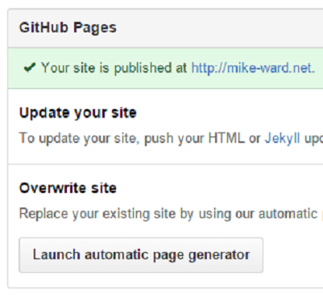

Web pages hosted directly from your GitHub repository
Just edit, push, and your changes are live
You get one site per GitHub account and organization, and unlimited project sites
Pages are static HTML
GitHub infrastructure is fast http://status.github.com
How Fast are GitHub Pages
Caching
No ads
No begging
No kidding
Update your domain host to point at GitHub
Add a file with your domain name
Gentle introduction to Git and GitHub
All the other advantages of using GitHub
Updating the Repository === Publishing
git push
Add some insightful content to a file
Save file in the _posts folder
git cm "my insightful new blog post"
git push
Stand back and revel in the glory of my blog post
where username is your usernamegit clone https://github.com/username/username.github.iocd username.github.io
echo "Hello World" > index.htmlgit add --all
git commit -m "Initial commit"
git push
http://username.github.ioCreate a new repository named username.github.io
where username is your usernameGo to Settings
